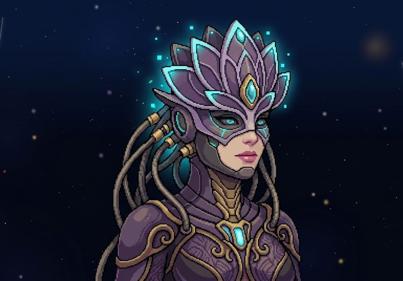
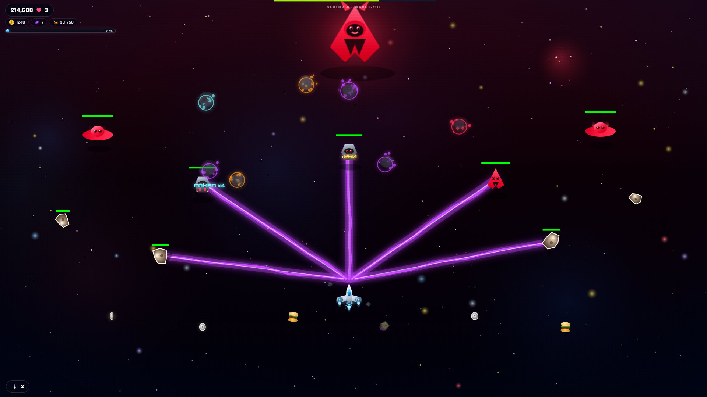
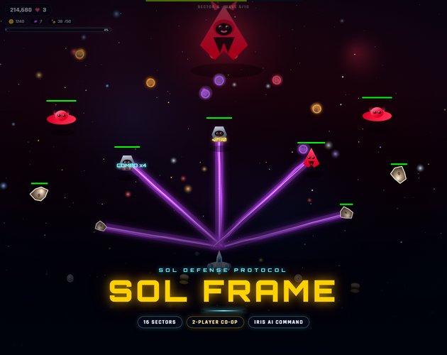

SOL Frame is a fast, neon arcade space shooter built around a single promise: become the weapon.
You pilot a lone “Frame” fighter against a 16-sector invasion — ten waves per sector, a unique dreadnought boss at the end, and a five-second salvage window before IRIS warps you onward. Guiding you is IRIS, the SOL Command AI who teaches every system as you first meet it, reacts to combat in real time, and speaks in three languages.
MASTERY
Instant mastery curve
One input to steer, one to fire, one to launch missiles. Depth comes from heat management, weapon levels, and positioning — not from memorising bindings.
ESCALATION
Escalation you can see
Every sector repaints the entire battlefield — sky, nebula, planet, enemy armour and effects — so progress feels like travelling somewhere new.
COMPANION
A companion, not a menu
IRIS replaces tutorial text with voice and dialogue, turning onboarding into a mission briefing and combat into a conversation.
ECONOMY
Replay-loop economy
Food → missiles, credits → upgrades, score → extra lives, weapon crates → in-run power. Every kill can feed the engine.
02
Vision & Design Pillars
Clarity over chaos
Even at peak density the player must read threats, the HUD, and their own power state at a glance. Neon-on-black contrast, crisp hitboxes, and a heat bar that screams before it fails.
Every sector is a place
The 16 sectors are not palette swaps; each owns its sky, nebula, planet, asteroid density, enemy mix, drift and boss. Warping should feel like a journey.
A companion AI that earns its voice
IRIS is the emotional through-line — she briefs, teaches, warns and celebrates, in the player’s own language.
Play anywhere, together
The same campaign runs on PC, browser and phone, with local and online two-player. No platform is second-class.
Respect time & device
Save/continue at any pause, four difficulties, particle-density scaling, three languages, mobile auto-fire.
03
Story & Setting
Humanity’s expansion into deep space — driven by the instinct to explore and to find resources — discovered worlds already inhabited by peoples strikingly like us, set apart by strange biologies and ancient augmentations. Alliances became a single union spanning many worlds.
Then the union’s own connective tissue became the vector. As travel between worlds intensified, a mysterious virus spread through the population. It inflames the brain, seeding paranoid delusions that everyone nearby intends them harm. The infected become violently convinced — attacking and destroying everything they encounter, permanent dangers to all others.
Out of the collapse, an organised invasion formed: a coordinated hostile grid of 16 sectors, each blockaded by a dreadnought. SOL Command has one answer left. You.
Your assignment. You are a Frame pilot — a single-seat fighter dispatched by SOL Command. Break the invasion sector by sector. Ten waves stand between you and each dreadnought. Destroy it, salvage what you can in five seconds, and IRIS warps you onward. Clear all 16 sectors and the invasion is broken.
IRIS — SOL Command
IRIS is the player’s artificial-intelligence handler and only ally in a hostile grid. She appears as a masked, gem-crowned figure linked by cabling to the SOL network.
Delivers the opening tutorial in context as the player first performs each action.
Warns about overheat, hazards, boss arrival and low supply.
Congratulates on weapon pickups, satellite recovery and extra lives.
Speaks English, Arabic and Japanese with dedicated voice clips.
Can be muted as a voice, or silenced entirely via IRIS Transmissions.
IRIS is the warm counterpoint to the cold, geometric enemy fleet — and the narrative voice of the opening.

IRIS · SOL Command
Bosses as antagonists
Each dreadnought is introduced by a COMMS INCOMING transmission and taunts the player in a single, memorable line that reflects its nature.
#
Sector
Dreadnought
Taunt
1
Iron Veil
VEIL WARDEN
“Iron holds this gate. You will scratch the paint, then fall.”
2
Ash Orbit
CINDER HOST
“Ash in your lungs. Fire in your wake.”
3
Rift Gate
RIFT STALKER
“The gate is a mouth. I am the teeth.”
4
Crimson Belt
BLOOD CROWN
“The belt is red for a reason. Add yours.”
5
Null Cluster
THE ABSENCE
“Nothing lives here. You are the exception I will correct.”
6
Dread Reach
DREAD NAIL
“Reach for me. I will pin you to the dark.”
7
Spine Corridor
SPINE TYRANT
“The corridor is narrow. So is your future.”
8
Ember Rim
CINDER QUEEN
“Embers first. Then the burn.”
9
Void Horizon
HORIZON EYE
“I see every vector. You have none left.”
10
Blacksun Gate
BLACKSUN
“Light dies at this gate. You are next.”
11
Core Anvil
ANVIL KING
“Hammer. Anvil. You are the work.”
12
Last Bastion
BASTION LORD
“The last wall still stands. You will not.”
13
Wraith Edge
WRAITH
“Catch a ghost. Miss. Bleed.”
14
Storm Drift
STORM REAVER
“The drift is a blade. I swing it.”
15
Scar Expanse
SCAR TITAN
“Every scar here is a warning. Read it.”
16
Final Siege
LAST SIEGE
“This is the end of the map. Make it loud.”
04
Target Audience & Positioning
PRIMARY
Ages 16–35
Arcade shooter, bullet-hell and co-op fans who love classic vertical shooters with modern polish.
SECONDARY
Mobile players
Casual players who want a deep game in short, satisfying sessions.
TERTIARY
Arabic & Japanese players
A genuine differentiator: a shooter that fully speaks their language, with RTL Arabic layout.
Difficulty philosophy: an accessible floor with a high skill ceiling. Easy is genuinely forgiving; Extreme is a survival gauntlet that pays a 2.5× score multiplier.
05
Core Gameplay Loop
01
BRIDGE — select sector, visit the Armory, adjust settings.
WAVE 10 — BOSS — COMMS INCOMING dialogue, then the dreadnought fight.
▼
05
RECOVERY WINDOW (5 s) — grab every drop before warp.
▼
06
WARP to the next sector · progress saved · sector unlocked · banks carried over. Repeat ×16.
▼
07
SECTOR 16 CLEARED → “INVASION BROKEN” — score, high score, new-record flourish, return to Bridge.
Minute-to-minute loop
1 · Read
Identify the incoming formation and the boss telegraph.
2 · Position
Dodge lanes; keep distance from kamikaze and armoured enemies.
3 · Fire
Hold to shoot; watch the heat rail; release before overheat.
4 · Spend
Missile when surrounded; satellites as a force multiplier.
5 · Collect
Fly over drops — every pickup is score, supply or power.
6 · Escalate
Same weapon colour raises its level; a new colour swaps the weapon but keeps the level.
06
Controls
Action
Player 1
Player 2 (same device)
Steer
Mouse
Arrow keys
Fire
Hold Left Mouse
Hold Z
Missile
Right Mouse
X
Pause
Esc
Esc
Dialogue
Space or click
Action
Mobile
Steer
Touch and drag (analog)
Fire
Automatic while in mission
Missile
Tap MISSILE
Pause
HUD button
Orientation
Landscape recommended
Design intent. On desktop the mouse is both aim and position — the single decision that makes the game instantly playable. On mobile, firing is removed as a choice so touch stays two-input and readable. Same-device 2P is disabled on mobile; cross-device co-op is fully supported.
07
Campaign Structure
Sectors (chapters)
16
Waves per sector
10 — wave 10 is the boss
Total waves
160
Recovery window after boss
5 seconds
Unlock rule
Beat sector n → unlock n+1
Difficulty levels
Easy · Normal · Hard · Extreme
Each sector is procedurally assembled from a hand-authored identity — sky, nebula, planet, asteroid density, enemy mix, drift and wave script — plus deterministic per-sector wave selection. Sectors are recognisable and learnable, yet varied between runs.
Sector roster — a journey across the grid
SECTOR 01
Iron Veil
VEIL WARDEN
Deep blue steel · balanced · armoured lines
SECTOR 02
Ash Orbit
CINDER HOST
Violet ash · swarm mix · falling rain
SECTOR 03
Rift Gate
RIFT STALKER
Crimson hot · fast · pincer & kamikaze
SECTOR 04
Crimson Belt
BLOOD CROWN
Blood red · dense packs · wedge & wall
SECTOR 05
Null Cluster
THE ABSENCE
Grey void · thin & slow · sniper pressure
SECTOR 06
Dread Reach
DREAD NAIL
Indigo dread · UFO-heavy · orbital rings
SECTOR 07
Spine Corridor
SPINE TYRANT
Teal corridor · narrow lanes · armoured walls
SECTOR 08
Ember Rim
CINDER QUEEN
Orange ember · fast scouts · dive attacks
SECTOR 09
Void Horizon
HORIZON EYE
Blue horizon · UFO rings · hover pressure
SECTOR 10
Blacksun Gate
BLACKSUN
Magenta eclipse · metal + UFO · lurkers
SECTOR 11
Core Anvil
ANVIL KING
Gold forge · dense heavy armour · walls
SECTOR 12
Last Bastion
BASTION LORD
Green keep · bastion formations · pincer
SECTOR 13
Wraith Edge
WRAITH
Pale wraith · fast & blinking · kamikaze
SECTOR 14
Storm Drift
STORM REAVER
Amber storm · dense rain · fast drift
SECTOR 15
Scar Expanse
SCAR TITAN
Rose scar · metal/UFO · lurching pressure
SECTOR 16
Final Siege
LAST SIEGE
Red siege · dense & fast · everything at once
08
Wave Design
Every non-boss wave is a named formation shown in the HUD. Wave size, enemy HP, spawn counts and asteroid count scale with sector and difficulty; thin/dense sector packs adjust column counts.
HUD name
Formation
Design notes
PATROL LINE
Grid, 2 rows, early spawn
Tutorial-friendly opening wave
SWEEP
Staggered double line
Horizontal sweeps
ORBIT RING
Orbiting ring
UFOs from sector 5 onward
STRAFE RUN
Swooping rows
Alternating direction
SCOUT SWARM
Wide chick grid
Fragile, numerous
SAUCER HUNT
Swooping saucers
Tougher, wider hitbox
DROP PODS
Parabolic drop
Staggered descent
ARMORED LINE
Armoured grid
0.66× damage taken
PINCER
Split swoop
Kamikaze flag
DIVE ATTACK
Twin swoop
Diving enemies
WEDGE
V-formation
Focused fire lane
FALLING RAIN
Parabolic swarm
Continuous pressure
WALL
3-row grid
Metal from sector 10+
ASTEROID FIELD
Timed asteroid spawn
Destructible terrain
BOSS · name
Single dreadnought
Dialogue-gated
09
Enemies
Kind
Description
Behaviour
Notes
Ordinary
Standard fighter
Formation flight, dives, bolts
Baseline
Chick (Scout)
Tiny fast craft
Swarms, fragile
Never drops bombs · 0.58× size · 42% food
UFO
Saucer
Swoops, strafes
1.2× HP · wide hitbox · bomb-capable
Metal
Armoured craft
Heavy formed lines
0.66× damage taken · bomb-capable
Rock
Asteroid
Falls, drifts, collides
Destructible · 22% food · collision costs a life
Egg / Bomb
Dropped explosive
Falls, splats on contact
Costs a life on contact
Boss
Dreadnought
Unique movement + fire kit
Full-screen HP bar + dialogue
Boss behaviour kits
Bosses are data-driven from 16 distinct combinations of movement and fire patterns.
Escalation: bosses scale in HP, fire rate and size. LAST SIEGE is the largest and toughest (1.35× HP, 1.22× scale); ANVIL KING is the most durable (1.28× HP).
10
Player Systems
The Frame fighter
HITBOX
Smaller than its sprite — 0.7 × 0.75 of the ship box — for fair dodging.
START
3 lives and 2 missiles.
RESPAWN
Brief invulnerability after a hit; respawn if lives remain, otherwise SYSTEM FAILURE.
MOVEMENT
Free two-axis steering in the bottom area of the screen.
Weapons — six armaments
All weapons share a level system (0–10, shown as 11 effective tiers) that increases outlets, bullet size and damage. Same colour = +1 level; a new colour switches weapon but keeps the level.
Spread bolts
Ion Blaster
Fan of accelerated bolts. The reliable all-rounder. Heat 6.5
Locks onto the nearest enemies and chains to a second target. Beam
Continuous plasma
Plasma Rifle
Lock-on beams that ramp damage while held on one target. Beam
Instant piercing beams
Laser Cannon
Vertical beams that hit the first enemy in each lane. Heat 10
Homing bolts
Photon Swarm
Homing bolts; at level 6+ can supercharge (red, +25% dmg). Heat 4.8
Timing + coordination: At level 10 a shot deals the full 1.08× enemy base HP. The fire interval differs per weapon (Green 7, Photon 9, Orange 10, others 8 frames), giving each a distinct rhythm.
Heat & overheat
Heat builds with every shot or beam tick and decays when not firing. At 100% the weapon overheats and vents over ~3 seconds. Lightning and Plasma build heat fastest — sustained beams demand disciplined trigger control.
0%WARNOVERHEAT 100%
Ordnance, satellites & economy
MISSILES
Area damage
Free, limited-stock tactical ordnance — not cooldown-based. Start with 2. Restock in the Armory or by filling the food counter (50 food = +1). Use to clear swarms and punish bosses.
SATELLITES
Orbiting gun droids
A satellite orbits the player and fires with them, extending coverage. Maximum of 2, from rare drops and the Armory.
Resource
Source
Use
Food
Drops — drum 1, burger 3, roast 10 units
50 units → +1 missile; also awards score
Credits
Coin drops (1 or 5)
Armory — lives, missiles, satellites
Score
Kills, pickups, bonuses
Every 100,000 → +1 life (repeatable); high score
Atomic / upgrade
Very rare drop
+1 weapon level
Weapon crate
Uncommon drop
Level up or switch weapon
COMBO
Kill multiplier
Consecutive kills build a combo multiplier shown in the HUD (e.g. COMBO x4), increasing score per kill and rewarding aggressive, uninterrupted play.
RECOVERY
The five-second window
When a boss dies, drops flood the screen for 5 seconds. Fly over them before IRIS warps the ship. Every boss kill becomes a short, greedy, high-adrenaline finale.
11
Progression & Meta
IN-RUN
Persistent power
Weapon level is permanent for the run (switching colour keeps it). Satellites, missiles, lives and credits carry across sectors.
SAVE
Continue exactly
Save from Pause stores sector, wave, weapon, heat, lives, missiles, satellites, score, food and P2 state. CONTINUE GAME restores it.
PERSIST
Between sessions
High score and settings persist locally. Reset Progress wipes all save data.
Armory
Item
Cost
Effect
LIVES
50 credits
+1 life
MISSILES
75 credits
+5 missiles
SATELLITE
150 credits
+1 orbiting droid (max 2)
Difficulty
Level
Enemy HP
Enemy speed
Bomb rate
Score multiplier
EASY
0.7×
0.55×
0.35×
0.8×
NORMAL
1.0×
0.68×
0.45×
1.0×
HARD
1.4×
0.82×
0.6×
1.5×
EXTREME
1.8×
0.95×
0.75×
2.5×
Difficulty is chosen per deployment and changes both the challenge and the reward.
12
Multiplayer
LOCAL CO-OP
Same device
Player 2 joins with Arrow keys / Z / X. Each pilot has independent lives, score, weapon, heat, food, coins and satellites. Respawn positions are offset so ships do not overlap.
ONLINE CO-OP
Two devices
Built on PeerJS peer-to-peer with six-digit room IDs. Host creates a room; guest joins with the ID; the host starts the mission. State synchronises each frame. Mobile requires two phones on the internet.
Status feedback is explicit:WAITING FOR THE SECOND PLAYER… · CONNECTING… · SECOND PLAYER CONNECTED · LINK LOST.
13
Audio Direction
MUSIC
Procedural engine
Music is generated in real time via the Web Audio API: a distinct sector theme per chapter, plus a boss arrangement that switches on dreadnought arrival or dialogue. Lead, percussion and bass respond to mode with deterministic per-sector seeds.
SFX
Combat texture
Per-weapon fire, missiles, explosions, pickups, UI, splats, warps and boss impacts. SFX volume is independently adjustable.
Game Over: SYSTEM FAILURE, score, new-record flourish
Multiplayer: host / join / status panels
Accessibility & inclusivity
Three full languages
Including RTL Arabic layout with mirrored typography and alignment.
Per-language fonts
Rajdhani/Orbitron for Latin, Cairo for Arabic, Noto Sans JP for Japanese.
Performance scaling
Particle density setting: Low / Medium / Ultra.
Skip-friendly teaching
IRIS transmissions can be skipped; seen tips are remembered and not repeated.
Mobile comfort
Auto-fire while in mission; landscape guidance.
Reduced motion
Animations and transitions disabled for users who prefer less motion.
15
Art Direction
Neon vector minimalism on deep-space black. Flat-shaded geometric craft, clean silhouettes, soft glows, starfields and parallax nebulae. Enemies are deliberately cute-menacing — smiley saucers and simple icons made sinister by scale and context. The player is a small, bright triangle of cyan/white light. Weapons are the spectacle: lightning arcs, plasma beams, piercing lasers, homing photons.

Live gameplay — plasma beams carving a dreadnought escort screen in a red sector.
SECTOR THEMING
Every sector repaints the field
Sky gradient, nebula colour, planet tint, enemy vest/skin, bolt colour, aura and meteor density. Sectors 5, 10 and 13 are deliberately “dark” unlit voids — they feel wrong and hostile.
BRAND
Logo & key art
Wordmark SOL FRAME in glowing yellow Orbitron with the subtitle SOL DEFENSE PROTOCOL. Key art shows the Frame fighter unleashing plasma against a red dreadnought and escorts. IRIS key art depicts the gem-crowned SOL Command AI.

Cover composition — the neon wordmark over live combat.
16
Technical Design
Layer
Implementation
Rendering
HTML5 Canvas 2D; procedural sprites painted to offscreen canvases and cached
Logic
Vanilla JavaScript; objects for bullets/particles; fixed update ticks
Audio
Web Audio API — procedural music + pre-rendered IRIS voice clips (MP3)
Networking
PeerJS (WebRTC data channels), six-digit room IDs
Persistence
localStorage — settings, high score, run save
Desktop build
Electron wrapper — 2-Windows/, SOL Frame.exe
Web build
Self-contained SOL Frame.html + peerjs.min.js + iris/
Mobile build
Capacitor / Android project → APK; installable web app
PWA
manifest.json — fullscreen, theme #010103
PLATFORM MATRIX
Windows
Portable .exe, no install
Web
Static hosting or local file
Android
APK via Android Studio
iOS
Safari Home Screen, or Mac + Xcode IPA
PERFORMANCE TARGETS
60 FPS on mid-range laptops and modern phones at Medium particles.
Particle-density setting protects frame-rate on low-end devices.
Sprite caching avoids per-frame vector redraws.
17
Content Inventory
16
Sectors
10
Waves / sector
160
Total waves
16
Unique bosses
15
Wave events
6
Enemy kinds
6
Weapons
11
Weapon tiers
4
Difficulties
3
Languages
16
IRIS voice events
14
Drop types
18
Save Data & Settings
Key
Stored
High score
localStorage
Language
localStorage
Volumes (master / SFX / music)
localStorage
Particle density
localStorage
IRIS tips / voice toggles
localStorage
Seen tutorial tips
localStorage
In-run save
Serialised run state (sector, wave, ship stats, banks, P2)
19
Future / Post-Launch Roadmap
NEAR-TERM
More to master
New sector variants & boss kits after sector 16
Endless / survival mode from the existing generator
Online leaderboards
Achievements & unlockable ship skins
MEDIUM-TERM
Wider reach
iOS App Store release (signed IPA)
IRIS inter-sector story transmissions
Additional languages via a voice pipeline
Remappable controls & gamepad support
LONG-TERM
Ecosystem
Sector / wave editor from the data-driven traits system
Competitive co-op scoring
Ghost replays
20
Appendix — Build & Play
PLAY FROM SOURCE
Browser: open 1-Game/SOL Frame.html
Windows: run 2-Windows/SOL Frame.exe
Mobile: install the APK, or host 1-Game/ over HTTPS
REBUILD PROMO IMAGES
cd 6-Promo && ./build.sh
Needs Node, Python + Pillow and Microsoft Edge. The pipeline poses the real renderer and screenshots it headlessly.
REGENERATE IRIS VOICE
python _iris_tts.py
Produces the 48 MP3 clips across English, Arabic and Japanese.
MOBILE BUILD
cd mobile node sync.js && npx cap sync android
Then Build > Build APK(s) in Android Studio.
21
Localization & Language Switching
SOL Frame launches with three fully supported locales — English, العربية (Arabic, RTL) and 日本語 (Japanese). Language is a live runtime setting, not a build-time choice: the player opens Settings → 言語 / LANGUAGE, picks a locale, and every menu, HUD label, tutorial transmission and IRIS line re-renders instantly — no reload, no lost progress.
Design intent. One data-driven LOCALES table feeds the entire interface. A locale is data, not code — shipping a fourth language means adding one locale block, a font stack and a voice set, with no changes to game logic.
Try it live. Use the AR / JP / KO / EN switch at the top-right of this page to translate the entire document — headings, tables, captions and this section included. The choice is remembered in your browser.
Localization matrix
Representative interface strings across all three shipped locales. The Japanese column uses natural, game-native phrasing (e.g. 兵装庫 for the Armory, システム障害 for System Failure) rather than a literal translation.
Key
English
العربية
日本語
score
Score
النقاط
スコア
lives
Lives
الأرواح
ライフ
missiles
Missiles
الصواريخ
ミサイル
credits
Credits
الرصيد
クレジット
weapon
Weapon
السلاح
武器
level
Level
المستوى
レベル
food
Food
الطعام
フード
combo
Combo
التتابع
コンボ
sector
Sector
القطاع
セクター
wave
Wave
الموجة
ウェーブ
boss
Boss
الزعيم
ボス
start_mission
Start Mission
ابدأ المهمة
ミッション開始
continue_game
Continue
متابعة
コンティニュー
armory
Armory
مستودع العتاد
兵装庫
settings
Settings
الإعدادات
設定
multiplayer
Multiplayer
اللعب الجماعي
マルチプレイ
exit
Exit
خروج
終了
resume
Resume
استئناف
再開
system_failure
System Failure
عطل النظام
システム障害
warp_ready
System Cleared — Warp Ready
تم تأمين القطاع — الاستعداد للانتقال
システムクリア、ワープ準備
boss_eliminated
Boss Eliminated
تم القضاء على الزعيم
ボス撃破
comms_incoming
Comms Incoming
اتصال وارد
通信着信
extra_life
Extra Life!
حياة إضافية!
エクストラライフ!
cannot_afford
Not Enough Credits
رصيد غير كافٍ
クレジット不足
select_difficulty
Select Threat Level
اختر مستوى التهديد
脅威レベルを選択
easy
Easy
سهل
イージー
normal
Normal
عادي
ノーマル
hard
Hard
صعب
ハード
extreme
Extreme
متطرف
エクストリーム
Language switching — runtime flow
01
Player opens 設定 / Settings and taps the 言語 / LANGUAGE selector.
▼
02
setLanguage(lang) is called — en, ar or jp.
▼
03
The active LOCALES block is swapped and all bound labels re-render in place.
▼
04
<html lang> is updated; rtl is toggled for Arabic; the Japanese font stack is enabled.
▼
05
The choice is written to localStorage and restored on the next launch.
Typography & layout per language
LATIN
English
Rajdhani for body copy and Orbitron for headings. Standard left-to-right layout with condensed, uppercase HUD labels.
RTL
العربية
Cairo typeface with a mirrored interface: text alignment, HUD ordering and padding flip for right-to-left reading. Punctuation and numerals follow Arabic conventions.
CJK
日本語
Noto Sans JP with relaxed letter-spacing and non-uppercase labels, since full-width characters do not need tracking. Japanese line-breaking avoids orphaning short particles.
Voice & audio per language
Every IRIS tutorial and reaction line exists as a pre-rendered clip in all three languages — 16 events × 3 languages = 48 MP3 files under iris/ (for example ja-heat.mp3 and ar-heat.mp3). If a clip is missing, the game falls back to the browser's Speech Synthesis API using the locale's BCP-47 tag (ja-JP, ar-SA, en-US) before finally falling back to English text.
Safe switching. Changing language mid-run never interrupts play: the active wave, weapon level, heat and banks are all language-agnostic. Only visible copy changes. Arabic also preserves the numeric HUD values untouched.
Adding a fourth language
DATA
Locale block
Add one entry to LOCALES with the same key set. Missing keys automatically fall back to en, so a partial locale is safe to ship and refine.
ASSETS
Fonts & voice
Register a font stack for the script and generate the 16 IRIS clips via python _iris_tts.py. No gameplay code changes are required.